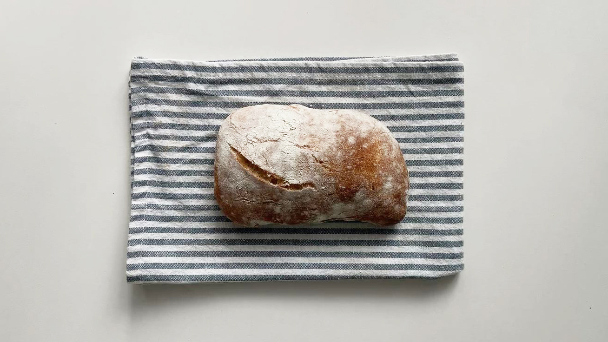
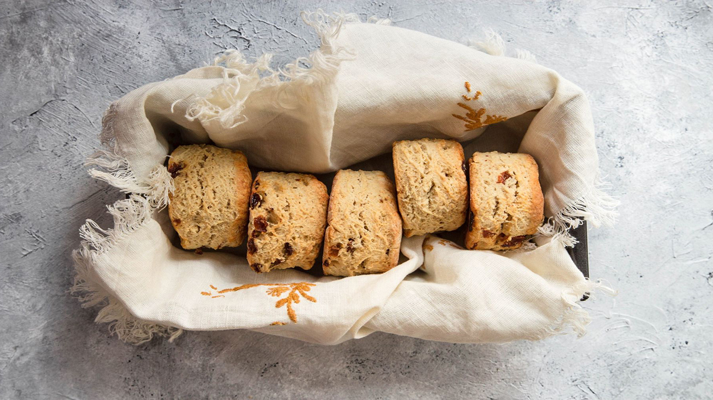
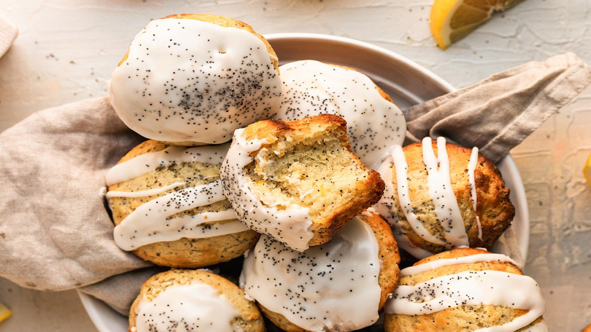

Menu
Bread

-
Sourdough Loaf
Naturally leavened and long-fermented for a deep, tangy flavor and crackling crust. Our signature everyday loaf. (V)
$8
-
Nut and Seed Loaf
Toasted sunflower, pumpkin, sesame, and flax seeds folded into our signature sourdough loaf.
$9
-
Olive and Herb Loaf
Kalamata and Castelvetrano olives with thyme and oregano baked into a savory, aromatic sourdough.
$9
-
Baguette
Thin, crisp crust with a light, airy interior. A classic sourdough baguette. (V)
$5
-
Sea Salt Focaccia
Extra virgin olive oil and flaky sea salt.
$7
-
Rosemary Focaccia
Fragrant rosemary and extra virgin olive oil.
$7
-
Ask about daily specials
Croissants
-
Plain Croissant
Buttery layers laminated by hand, baked until deeply golden and crisp.
$5
-
Chocolate Croissant
Flaky croissant dough wrapped around organic, dark chocolate.
$5
-
Almond Croissant
Sweet almond cream and baked until caramelized on top.
$5
Cinnamon Rolls
-
Maple Coffee Roll
Soft, spiraled dough layered with cinnamon sugar and finished with a maple coffee glaze.
$5.50
-
Chocolate Raspberry Roll
Dark chocolate and fresh raspberry swirled into our classic dough.
$5.50
Scones

-
Lemon Blueberry Scone
Blueberry and fresh lemon zest.
$5
-
Chorizo Potato Scone
Spiced chorizo and roasted potato.
$5
-
Chocolate Raspberry Scone
Rich dark chocolate and fresh raspberry.
$5
-
Seasonal: Blood Orange & Cardamom Scone
Fresh blood orange zest and warm cardamom, finished with a light citrus glaze.
$5
Muffins

-
Blueberry Muffin
Fresh blueberries and a crumble top.
$4
-
Lemon Almond Muffin
Lemon and toasted almond.
$4
-
Seasonal: Maple Walnut Streusel Muffin
Maple with toasted walnuts and a buttery oat streusel topping.
$4